15 september 2022
•Download file database wordpress terlebih dahulu. Lalu extract file ke dalam folder htdocs yang ada di folder xampp sambil mengakifkan xampp (bagian apache dan msql)

 •Lakukan instalasi dengan mengakases wordpress melalui browser. Pada browser, masukkan URL berikut: http://localhost/wordpress-6.0.2
Hasil dari tampilan ini adalah sebagai berikut
•Lakukan instalasi dengan mengakases wordpress melalui browser. Pada browser, masukkan URL berikut: http://localhost/wordpress-6.0.2
Hasil dari tampilan ini adalah sebagai berikut

• Klik continue, Lalu klik tombol lets go dibawah


•Kembali ke tab instalasi wordpress, klik Try Again lalu isikan kembali konfigurasi database seperti tahap sebelumnya, klik Submit.
•Jika konfigurasi tidak ada masalah, langsung saa klik run the installation
•Lengkapi form informasi yang dibutuhkan lalu klik Install Wordpress
•Isikan password dan pastikan kita mengingatnya.
•Untuk melihat dan mengedit web yang telah dibuat, akses menggunakan link berikut: http://localhost/wordpress-6.0.2
•akan muncul seperti gambar dibawah


 TUGAS 2. Membuat website wordpress dengan database terpisah ( 3 website)
TUGAS 2. Membuat website wordpress dengan database terpisah ( 3 website)

• pertama, siapkan database dan web server di Ubuntu.
• Atur network setting menadi bridge dan host only
• Buka database, ketik sudo nano /etc/mysql/mysql.conf.d/mysqld.cnf

Masukkan password untuk user salwa. Ganti bin address menjadi IP Server Database

• Restart mysql dengan perintah sudo systemctl restart mysql
• Membuat user agar Database MySQL dapat diakses melalui WEB Server. Jalankan perintah sudo mysql
• Membuat user dengan menalankan perintah CREATE USER '{username}'@'{ip web server}' IDENTIFIED BY '{password}';

• GRANT ALL PRIVILEGES ON *.* TO '{username}'@'{ip web server}';
• FLUSH PRIVILEGES;

KONFIGURASI WEB SERVER
Jalankan perintah di web server
• lakukan penginstalan mysql-client dengan menjalankan perintah sudo apt install mysql-client
• Login ke mysql DBserver melaluiWebServer dengan perintah mysql –u usersalwa –h (ip) -p

• Jalankan perintah mysql> \s untuk cek informasi database

• perintah php --version untuk mengecek versi dari php

• Membuat file koneksi pada webserver dengan perintah sudo nano/var/www/html/koneksidb.php
INSTALL WORDPRESS DI UBUNTU
• apt update && apt upgrade
• install apache2 menggunakan perintah apt install apache2

• selanjutnya, jalankan perintah systemctl status apache2 untuk memeriksa status apache

• install mysql dan php
apt install mariadb-server mariadb-client
mysql_secure_installation
lalu, jalankan perintah sudo apt install php php-mysql

•masuk ke gnu nano denan perintah sudo nano /var/www/html/path

•create wordpress database. pertama kita masuk ke mysql
dengan perintah mysql –u root –p
lalu menambah database dan user dengan perintah :
•create database wordpress_db;
•create user'wp_user'@'localhost' IDENTIFIED BY 'password';
•grant all on wordpress_db.* TO 'wp_user'@'localhost' IDENTIFIED BY 'password';
•flush previlages; Exit;
INSTALL WORDPRESS
•cd /tmp && wget https://wordpress.org/latest.tar.gz
untuk mengganti directory ke tmp dan mengakses file dari wordpress
•tar -xvf latest.tar.gz
befungsi untuk melakukan ekstract pada folder yang dipilih

•kemudian jalankan perintah seperti gambar dibawah

• step terakhir, buka wordpress menggunakan alamat ip

Lanjut untuk membuat database ke2 dan ke3 Dengan perintah yang sama
Masuk ke mysql , lalu lakukan perintah
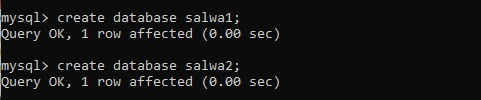 create database berfungsi untuk membuat/menambah database baru 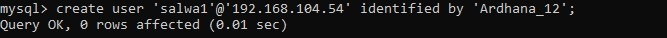 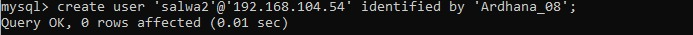 menambah user baru 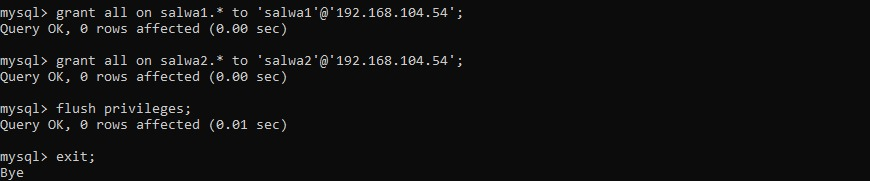grant all = untuk memberi hak akses user
flush previlage = membaca ulang perintah yang dibuat
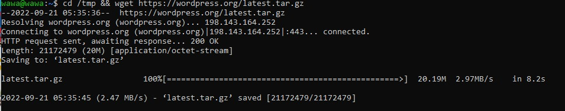 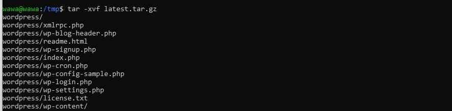
sekarang kita sudah bisa mengakses wordpress dengan satu alamat ip, namun databasenya berbeda
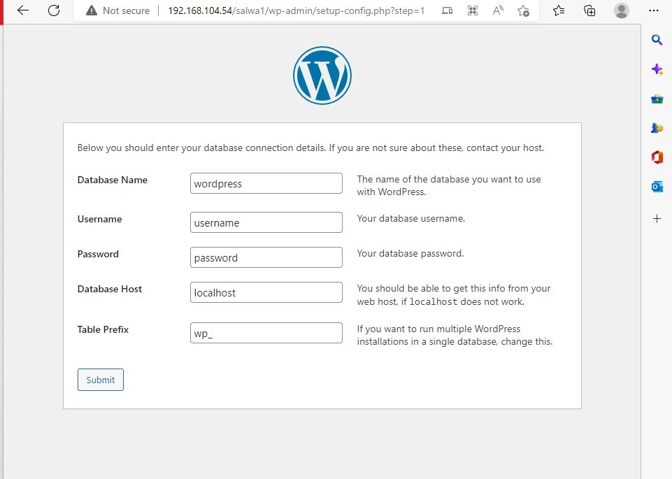 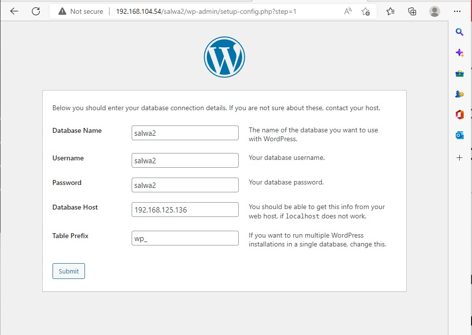 Tugas 3. Jelaskan kegunaan antara union, select, wait dan --Pertama, kita masuk ke mysql dengan perintah sudo mysql –u root –p
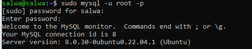Lalu jalankan perintah show databases; untuk melihat database yang ada
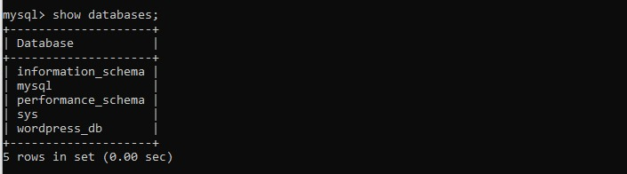Setelah itu, pilih satu database. Dan jalankan perintah use
*Use mysql*
Lalu *show tables;*
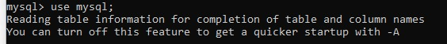 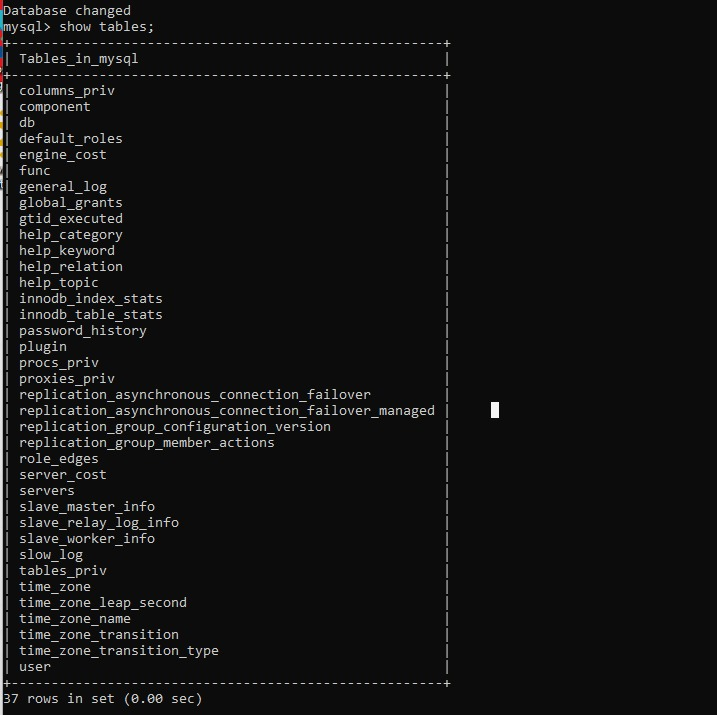select = berfungsi untuk menampilkan, mengambil ataupun memilah informasi dari database atau data dari suatu table serta beberapa table dalam relasi. Dengan menjalankan printah
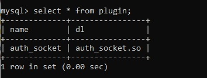union = menggabungkan dua table dalam bentuk baris baru ke bawah. Dengan menjalankan peirntah select name from plugin
-> union
-> select component_urn from component;
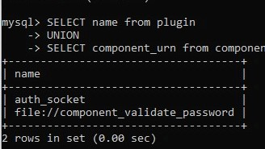wait = wait (sleep) befungsi untuk mengatur waktu sampai data keluar
jalankan dengan perintah select *, sleep(7) from component;
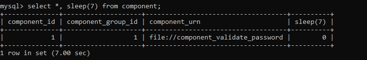-- = berfungsi untuk menambah komentar (diletakkan didepan perintah)
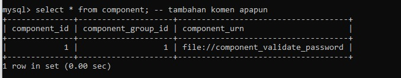 TUGAS 4. AKSES CONTROL LIST PADA MYSQL1. Menggunakan perintah “select”
-membuat user dengan perintah “create user wawa1@localhost identified by ‘pass’; “
-jalankan perintah “grant select on nama_database.nama_tabel to wawa1@localhost;”
-setelah dijalankan, berarti user hanya bisa menggunakan perintah select
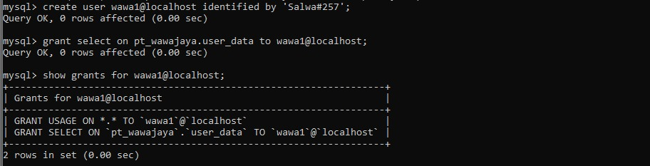 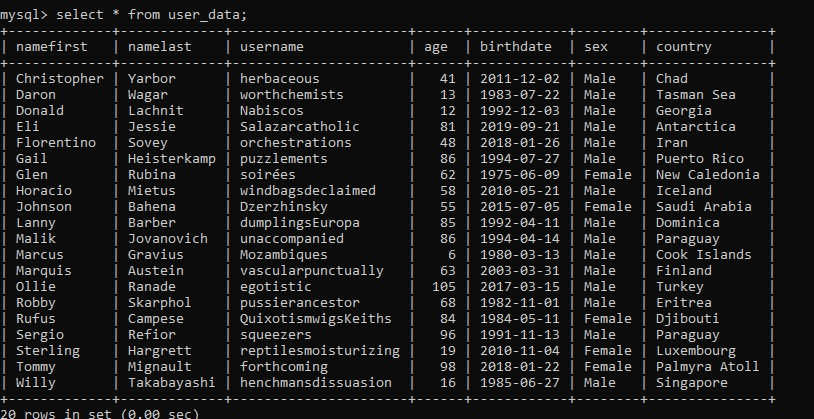-untuk membuktikannya, kita akan coba menggunakan perintah lain. Yaitu drop dan update.
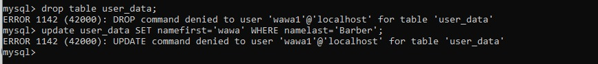2. Menggunakan perintah alter
-create user wawa2@localhost identified by 'Wawa#257';
- grant alter on pt_wawajaya.user_data to wawa2@localhost;
- show grants for wawa2@localhost;
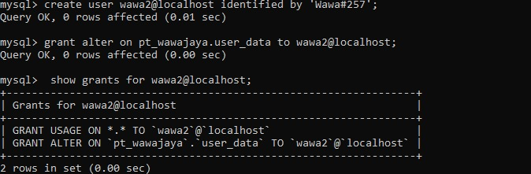 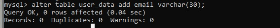 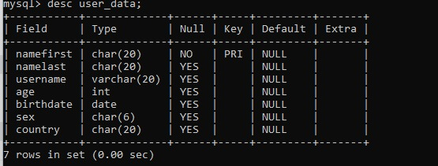 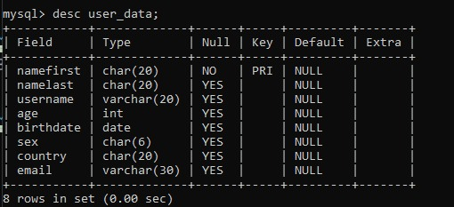-kita coba untuk menambah data pada email
-dengan perintah : -alter table user_data add email varchar(30);
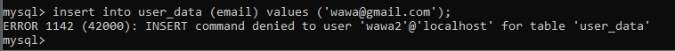3. Menggunakan perintah create
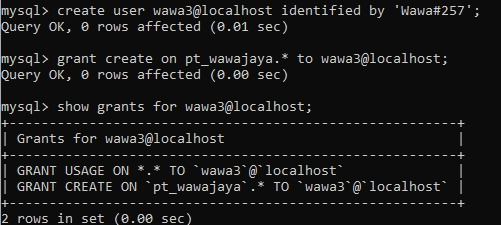 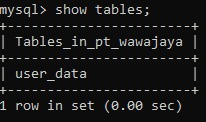 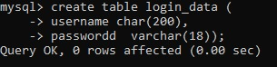 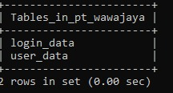kita coba menganti localhost dengan ip
1. menggunakan grant select
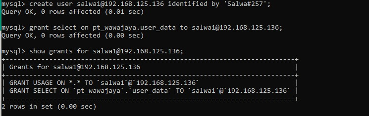 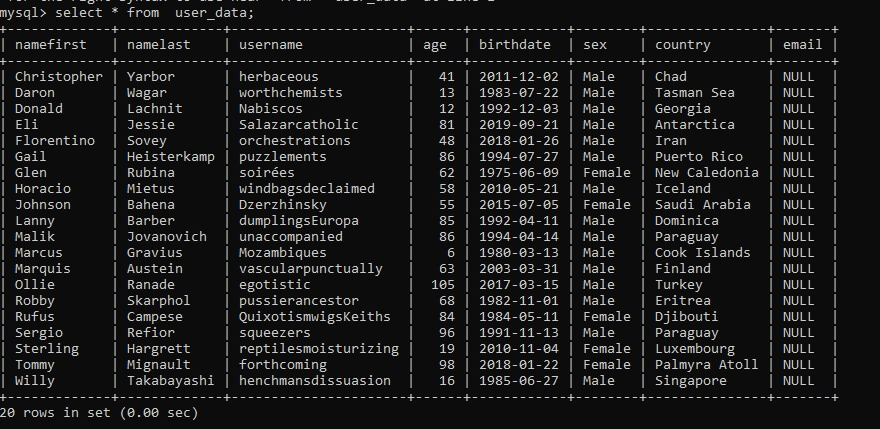 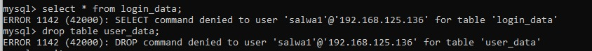2. menggunakan grant create
 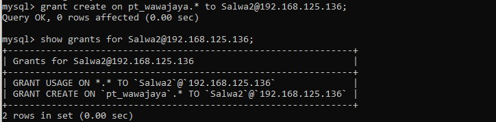
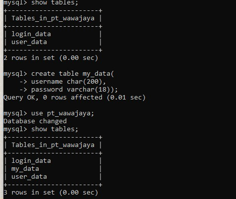
TUGAS 5. Perbedaan antara DAC dan MAC
Discretionary AccessConstrol (DAC)
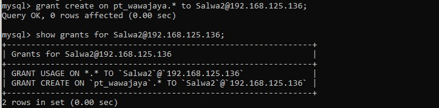
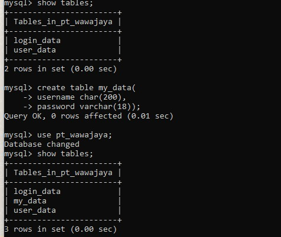
TUGAS 5. Perbedaan antara DAC dan MAC
Discretionary AccessConstrol (DAC)
Kontrol Akses Diskresioner (DAC) adalah jenis kontrol akses yang ditentukan oleh Kriteria Evaluasi Sistem Komputer Tepercaya “Sebagai cara membatasi akses ke objek berdasarkan identitas subyek /kelompok yang menjadi bagiannya. Kontrol bersifat diskresioner dalam arti bahwa subjek dengan izin akses tertentu mampu meneruskan izin tersebut (mungkin secara tidak langsung) ke subjek lain (kecuali dikendalikan oleh kontrol akses wajib) “>
Dalam DAC, keamanan data dapat direpresentasikan bahwa :
1.Userdapat menjaga data yang mereka miliki
2.Ownerdapat memberikan grant pada user lain
3.Ownerdapat memberikan definisi tipe akses yang akan diberikan pada user apakah akses tersebut berupa read, write, execute
Definisi Discretionary Access Control yaitu suatu mekanisme dalam pembatasan akses kepada objek-objeknya berdasarkan identitas subjek-subjek dan/atau group subjek dimana objek tersebut berada.
Biasanya Dac sering digunakan pada perangkat digital pada bagian output untuk membuat sinyal analog setelah sebelumnya sinyal diproses dalam bentuk digital Dac diperlukan karena loud speaker atau bagian audio tidak dapat secara langsung memproses data digital dan supaya loud speaker bisa memproses data digital maka diperlukan dac
Mendatory AccesControl (MAC)MAC adalah cara yang lebih mudah dalam membangun dan mempertahankan akses, terutama ketika berhadapan dengan sejumlah besar pengguna, karena Anda hanya perlu menetapkan satu tingkat untuk setiap sumber daya dan satu tingkat untuk setiap pengguna.
1.MAC menyediakan akses berdasarkan level sementara DAC menyediakan akses berdasarkan identitas
2.DAC lebih padat karya daripada MAC
3.DAC lebih fleksibel daripada MAC
4.MAC akses hanya dapat diubah oleh admin sementara akses DAC dapat disediakan oleh pengguna lain
Dalam keamanan komputer, kontrol akses wajib mengacu pada jenis kontrol akses di mana sistem operasi atau database membatasi kemampuan subjek atau inisiator untuk mengakses atau umumnya melakukan semacam operasi pada objek atau target.
Apa Perbedaan Antara MAC dan DAC ??MAC dan DAC agak terpolarisasi. Sementara beberapa skema kontrol akses dapat bekerja sama dalam beberapa kapasitas, relatif sulit (jika bukan tidak mungkin) untuk secara efektif menerjunkan DAC dan MAC tanpa melangkahi satu sama lain.
Dengan demikian, ketidakcocokan ini sebagian disebabkan oleh perbedaan antara kedua pendekatan tersebut. Wajib dan Diskresi berbeda dalam beberapa cara utama:
Protection / Perlindungan: Kebijaksanaan wajib menawarkan perlindungan yang lebih stabil dan dapat diprediksi ketika diterapkan dengan baik. Kontrol akses diskresioner dapat memberikan fleksibilitas utama bagi organisasi tetapi juga memperkenalkan potensi konflik antara izin individu dan seluruh organisasi.
User control / Kontrol Pengguna: Selain itu, kontrol wajib tidak terlalu fleksibel di luar skema mereka, dan untuk alasan yang baik–untuk mengatasi masalah keamanan yang terkait dengan akses dari tingkat organisasi. Namun, ada contoh yang sah di mana individu dalam organisasi harus menerima akses ke sumber daya tertentu bahkan jika peran atau atribut pengguna mereka tidak mengizinkannya.
Maintainability / Pemeliharaan: Kontrol akses wajib biasanya dirumuskan dari atas ke bawah dan direncanakan secara terpusat. Itu berarti bahwa mereka dapat mendukung otorisasi yang kuat di seluruh sistem, dengan tuntutan keamanan dan peraturan yang diterapkan di satu tempat.
Di sisi lain, DAC bisa berantakan jika pengguna akhir menerapkan kontrol akses lokal secara serampangan atau tanpa mempertahankan daftar izin mereka dalam kasus di mana karyawan meninggalkan perusahaan atau diberhentikan.
SEKIAN , TERIMAKASIH